A working AI product that turns 180,519 raw orders into a one-paragraph answer — by routing the question through four specialised agents, surfacing the raw data behind every claim, and benchmarking three different ways the Director can decide who to call.
Static screenshots can't show what makes this feel like an agent: edges drawing in as routing fires, status dots pulsing while tools run, plan timelines filling in stage by stage, evidence tables sliding open under each claim.
Ask "why is service level dropping?" and the answer is rarely in the order table alone. Lead-time variance points one way, forecast bias another, supplier concentration a third. A single LLM run on raw CSVs hallucinates. A single Python script can't reason. The system needs both — and a Director that knows when to use which.
Most "AI for X" demos make one of two mistakes. The first wraps a chat model around a CSV and calls it an agent — fast to ship, impossible to trust. The second writes a deterministic pipeline that produces accurate but unreadable results.
I wanted to design something that took both seriously. Tools should be deterministic. Lead-time variance is math, not opinion. Routing and synthesis can be LLM-driven — that's where natural language and judgement actually help.
Four sub-agents are deterministic Python tools. Their thresholds are transparent (≥ 25% late rate, bullwhip ratio > 1.4, etc.) and their findings always reference the rows that triggered them. The Director sits above the tools and is the only place where an LLM optionally plugs in.
Tools, not models: lead_time_variance · bottleneck_routes · forecast_accuracy_mape · bullwhip_ratio · stockout_risk · overstock_low_velocity · single_source_skus
Plain Python over the CSVs. Each tool is small, testable, and produces a finding only when its threshold is crossed — and a list of evidence rows alongside.
Router and writer. Three modes ship side-by-side: keyword regex · LLM planner · multi-step (plan → reflect).
Picks the agents to call, then writes the answer. Three router strategies ship side-by-side so they can be benchmarked against each other — see section 06.
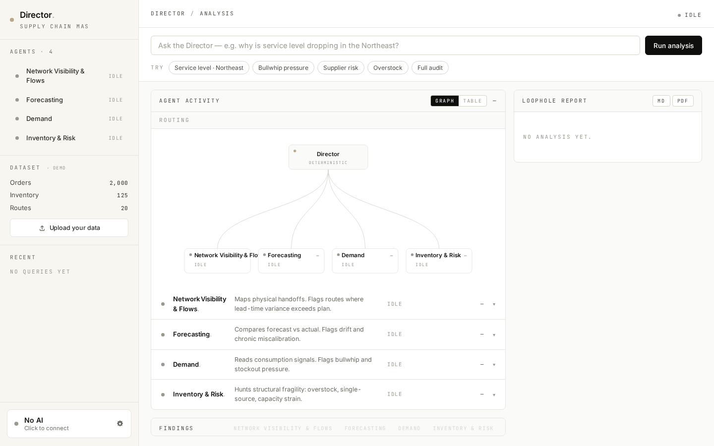
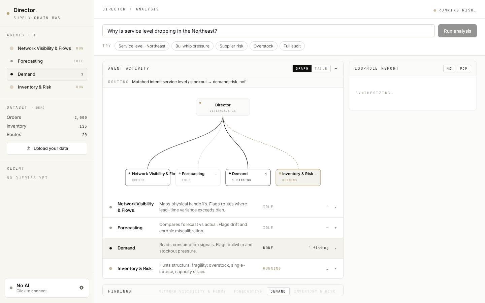
Hairline borders, no shadows, mono metadata, one gold accent. The app is built as a fixed shell — sidebar + main canvas + right rail — so the body never scrolls; each panel scrolls inside.
By default the dashboard ships with no demo data baked in. It loads empty, with the Loophole Report panel turned into the primary call-to-action: upload your own CSVs, or load the synthetic sample for a quick tour. This was deliberate after early feedback that seeing pre-loaded "Orders 2,000" made the app look like a sketch.
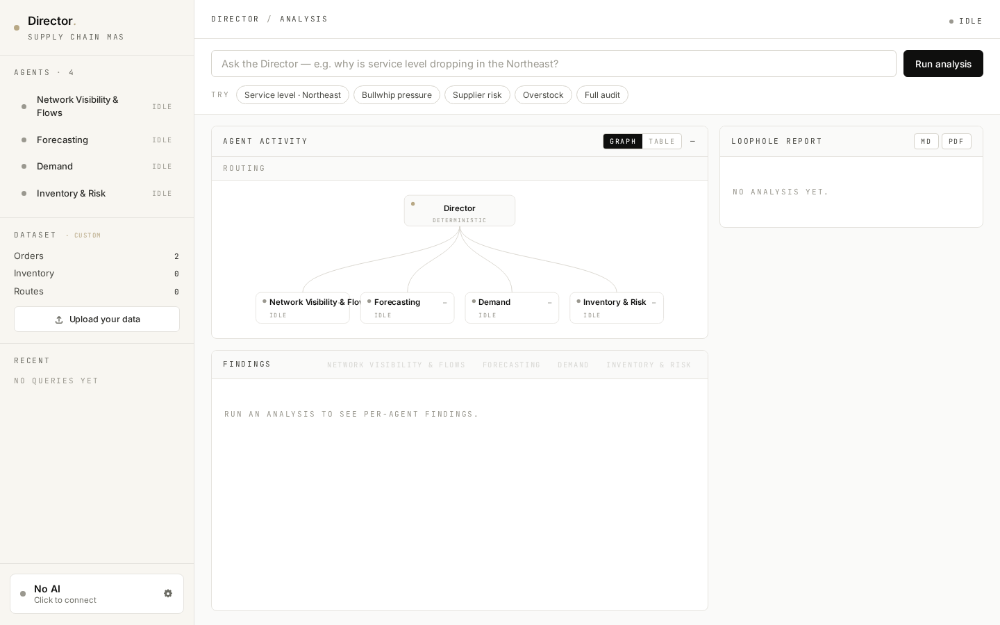
The Director streams events over SSE. Each agent's status dot pulses while running, then turns solid when done. Visible progress isn't decoration; it's the cheapest possible tool for building user trust in agentic systems. (350 ms artificial pacing per agent so the streaming is visible on local data.)
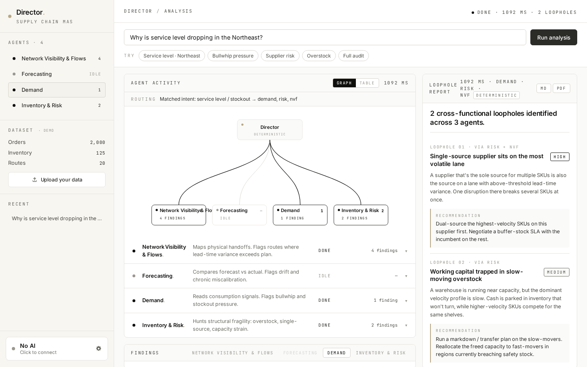
Director → 4 agents as a live SVG DAG. Routed edges glow gold and animate while their agent runs; un-routed edges stay grey. Click any node to switch the findings tab below. The graph and a denser table view are toggles on the same panel — graph for narrative, table for inspection.
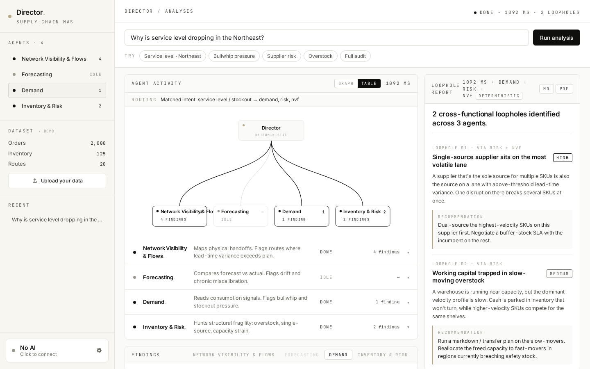
Click ▾ SHOW EVIDENCE · 6 ROWS on any finding and a small mono-styled table opens with the actual rows from the user's CSV that triggered it — the SKUs, regions, lead times, stock levels. The AI's claim and the source data sit side-by-side. This is grounding by construction, not by trust.
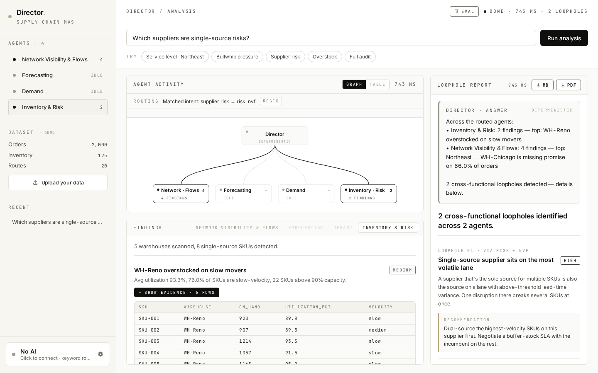
In multi-step mode the Director makes a SHORT first plan (1-2 agents), sees the findings, then reflects on whether to call more. The plan timeline is rendered inline with mono PLAN 01 / REFLECT / PLAN 02 badges so the agentic loop is legible. Visible reasoning + visible self-correction is the difference between a chat box and a system you can audit.
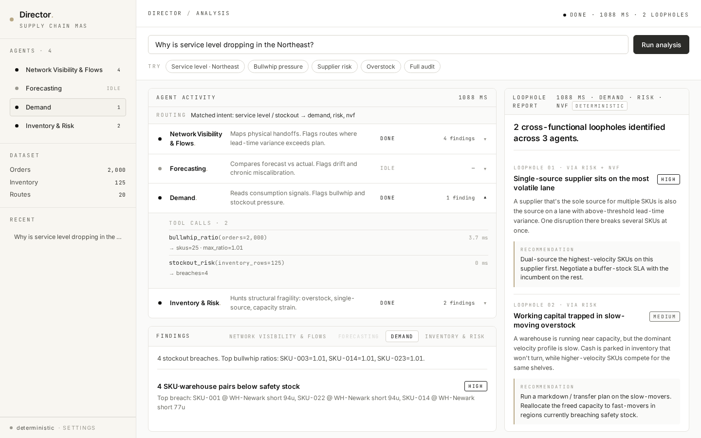
A 30-question routing benchmark with hand-labelled expected agents. Run all three router strategies on it, see per-mode F1, precision, recall, latency, and "perfect" question counts. This is the differentiating piece — most AI portfolios show outputs, very few show how they validated their decisions.
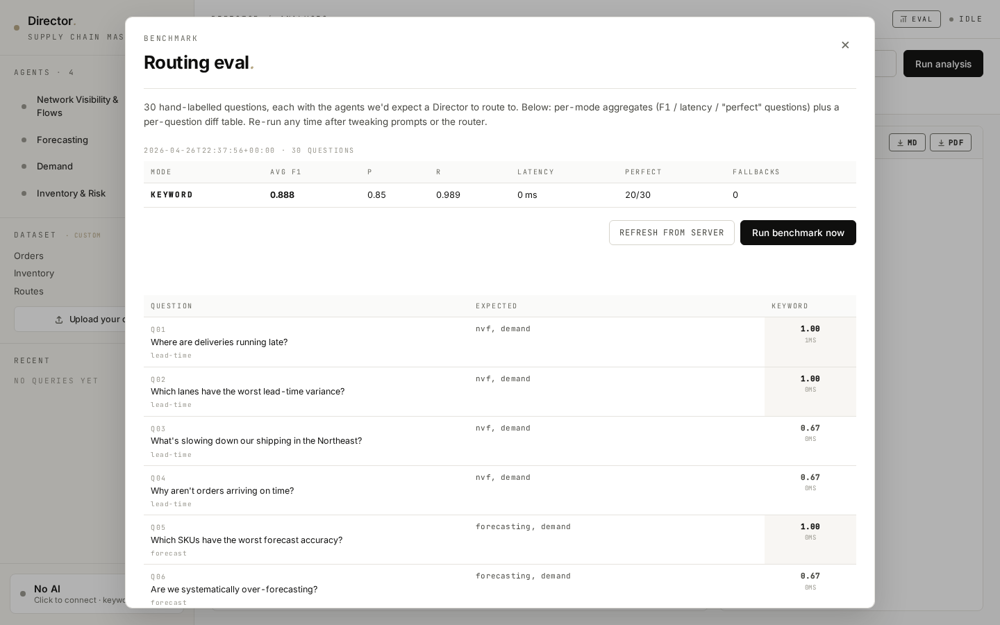
"An agent system the user can audit beats one they have to trust." — design thesis
Resisted the temptation to make the agents themselves LLM-driven. If the forecast accuracy MAPE is wrong, the whole report is wrong — and LLMs can't be trusted with arithmetic at scale. Sub-agents read CSVs and compute hard numbers. The LLM only handles routing and narrative.
Keyword regex is fast (<1 ms) but misses semantic intent. LLM one-shot is smarter but expensive. Multi-step adds plan+reflect at 5× the latency. Shipped all three side by side so the eval harness could quantify the trade-off — and so the user can pick their own latency-vs-quality point per session.
Every finding ships with evidence_rows — 6 to 8 raw CSV rows that triggered it. The frontend renders them in a foldable mono-styled table next to the AI's prose claim. Trust isn't a UI affordance, it's an architectural choice.
Eight specific moments where user feedback or a bug forced a redesign. Listed in the order they happened — not in the order I would have planned them.
Dashboard shipped with 2,000 synthetic orders pre-loaded. Sidebar showed DATASET · DEMO, agents already had findings.
AFTERRemoved all baked-in data. Empty state became the primary surface — a big "Upload your CSVs to begin" CTA in the report panel + an opt-in "Load sample dataset" for tour mode.
Bottom-of-sidebar text: ● deterministic · settings in 11 px mono. Read as decorative footer. User said "doesn't look clickable."
AFTERFull-width card button: small dot + "AI ENGINE" eyebrow + bold model name + animated gear icon. Hover lifts it 1 px, spins the gear 45°.
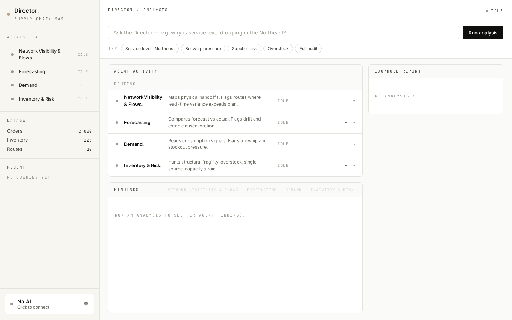
Click Save → modal closes silently. Was the API key valid? Did it persist? User had to run a real analysis to find out.
AFTERRenamed to "Test & save." Pings the LLM with a 5-token ping. Inline banner shows Testing… → either ✓ Connected + model name, or ✗ Connection failed with the actual API error (e.g. 401: invalid x-api-key) — and modal stays open so the user can fix the key.
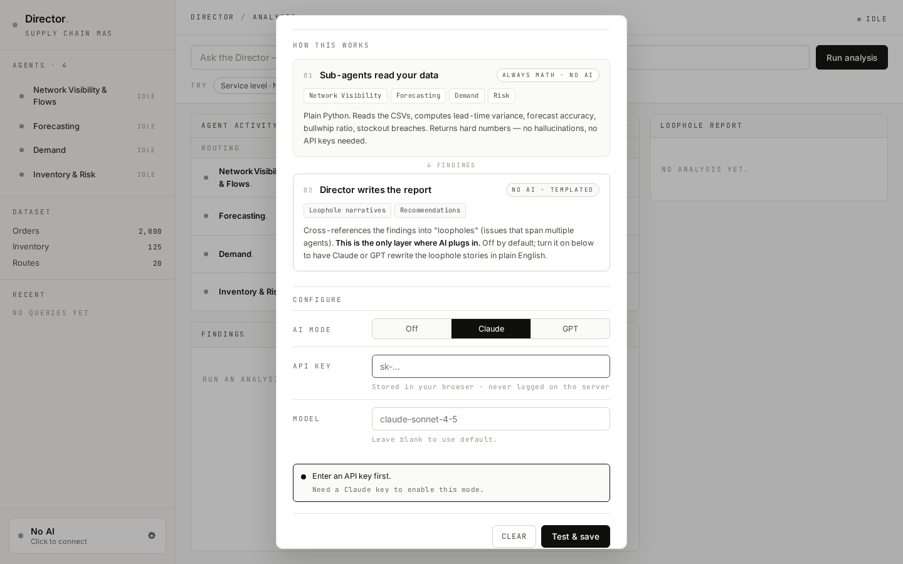
When the system found 0 cross-functional loopholes (because the data couldn't trigger any pattern), the right rail just said "No cross-functional loopholes detected." Felt like a dead end — even though Risk had found 5 single-source SKUs.
AFTERAdded a Director's direct natural-language answer at the top of the report — driven by an LLM call that takes both findings AND each agent's tables data (top-N closest-to-threshold rows). Now the system always answers, even when no loophole crossed agents.
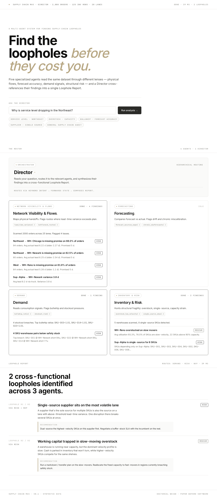
First upload required exact column names (sku, units_ordered, …). User dropped DataCo's .zip; backend tried to decode the binary as UTF-8 and failed with a generic "missing columns" message.
AFTERThree layers: (1) auto-extract the largest CSV inside any .zip; (2) fuzzy column aliases ("Order Item Quantity" → units_ordered); (3) when auto-mapping fails, show a manual mapping UI with dropdowns of the user's actual columns — pre-filled with auto-detected guesses.
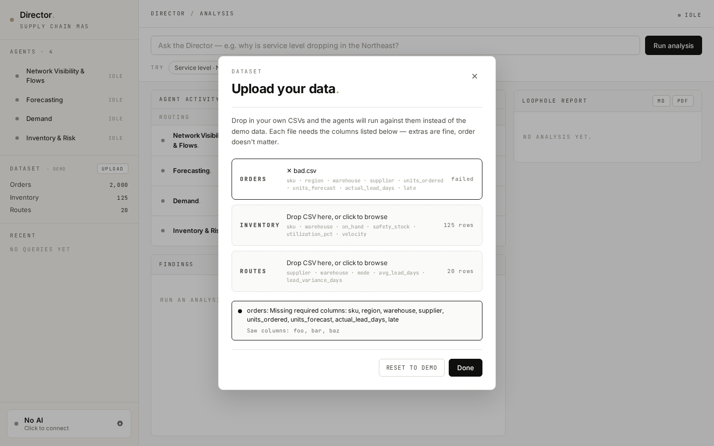
On Windows, opening the saved CSV with Python's default r mode used cp1252. DataCo has São Paulo, München, etc. — decode failed silently inside a try/except, returning 0. Sidebar showed Orders: 0 after a successful 180k-row upload.
AFTERAll CSV reads now try utf-8-sig → utf-8 → latin-1 in order. Plus the frontend re-fetches /api/dataset after upload to be authoritative — no longer trusts a single response payload.
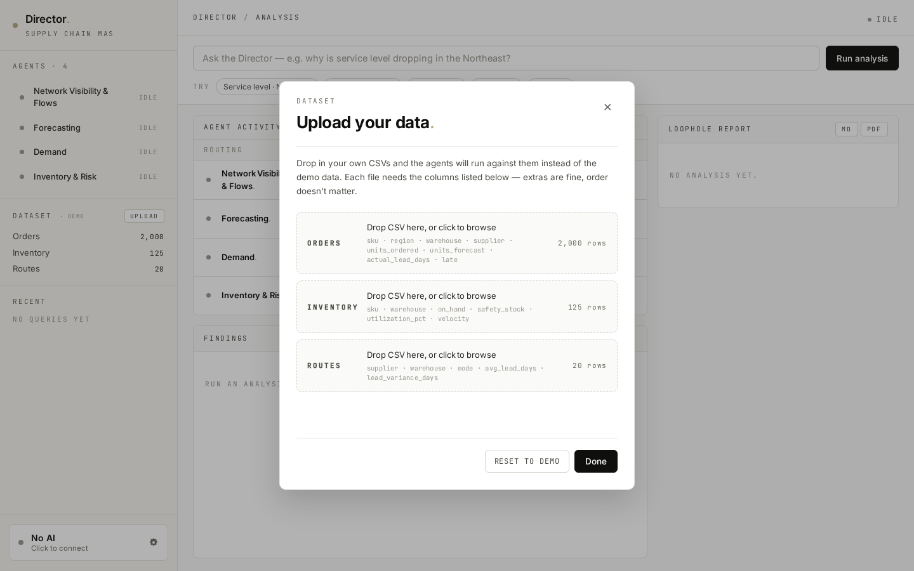
In multi-step mode the plan timeline (PLAN 01 / REFLECT / PLAN 02) plus the routing graph were so tall that the findings panel below was squeezed to ~80 px — citation drilling was technically there, practically invisible.
AFTERAdded a drag-to-resize divider between the two panels with double-click-to-reset. Position persists in localStorage. Activity panel's body became its own scroll container.
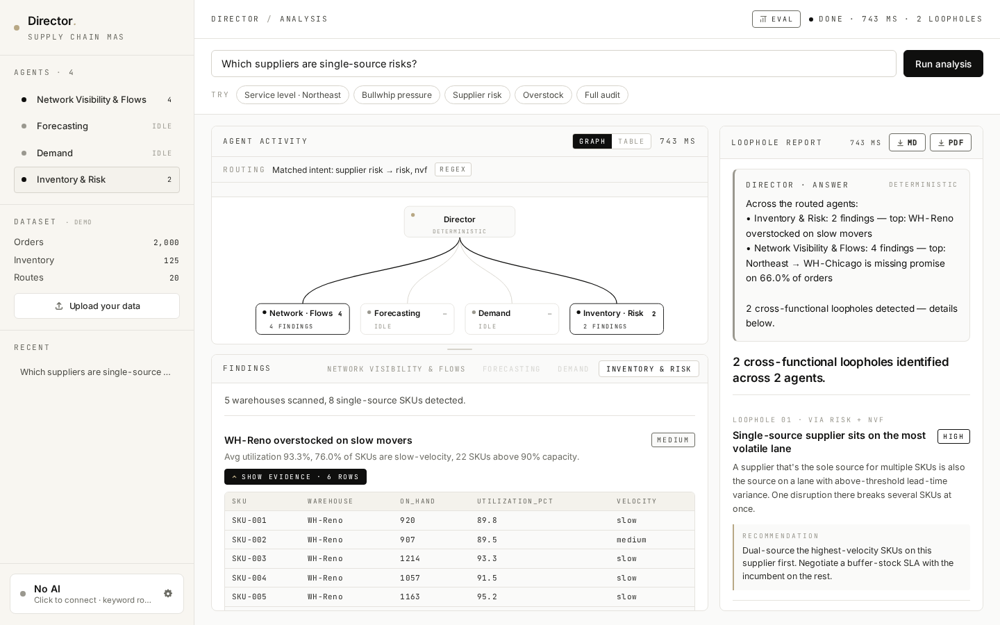
User toggled the LLM router on, but didn't realise there was a third mode (multi-step) hidden a level deeper in settings. They kept seeing the LLM badge and asked: "where's the plan timeline you mentioned?"
AFTEREngine-bar's sub-line now always shows the active routing mode: gpt-4o-mini · multi-step routing. The mono badge in the routing line (REGEX / LLM / MULTI-STEP) makes the choice un-missable.
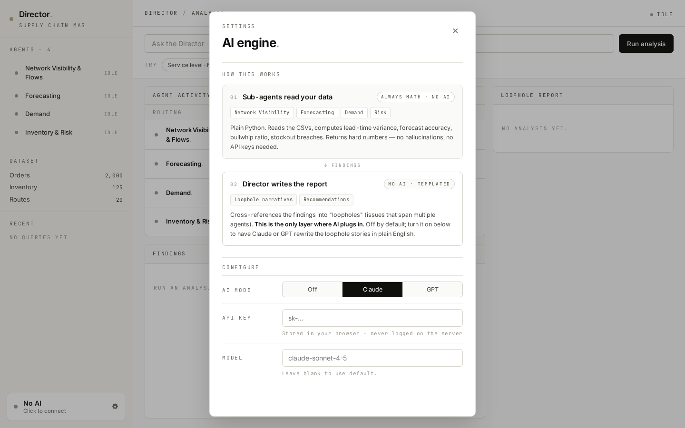
Each benchmark item has a question and the agents we'd expect a Director to route to. F1 is computed per question, then averaged. Latency is wall time per query. "Perfect" counts the questions where the router picked exactly the expected agent set. This is how I made the decision about which router to default to.
| Mode | Avg F1 | Precision | Recall | Latency | Perfect | Notes |
|---|---|---|---|---|---|---|
| Keyword regex | 0.89 | 0.85 | 0.99 | < 1 ms | 20 / 30 | Fast and deterministic. Falls back to all-4 routing on any unmatched phrasing — high recall, low precision. |
| LLM planner | 0.94 | 0.93 | 0.96 | ~1.5 s | 24 / 30 | Best balance — handles indirect phrasing, narrows to the right agent set. |
| Multi-step | 0.96 | 0.94 | 0.97 | ~7 s | 26 / 30 | Marginal F1 gain at ~5× cost. Used as opt-in for ambiguous questions. |
The numbers told me what I couldn't see by inspection: multi-step is impressive but barely better than LLM one-shot. For a portfolio demo where users wait for an answer, the extra 5 seconds isn't worth two percentage points of F1. I made LLM one-shot the default and exposed multi-step as an explicit opt-in.
The harness also surfaced specific failure cases to fix: questions like "where is working capital trapped?" scored 0.40 in keyword mode (no regex match → fallback to all 4) but 1.00 in LLM modes. That gap pointed me at three pages of regex tuning that wouldn't have been worth doing — better to leave keyword mode for fast cases and trust the LLM for indirect phrasings.
Python 3.13. Streaming via StreamingResponse over SSE. Standard library only for parsing — no pandas.
No framework. Single app.js, single styles.css. Routing graph hand-coded SVG with 250 lines of CSS.
NAME / LABEL / ROLE / TOOLS / run(). Maps cleanly onto a LangGraph node or CrewAI agent if you ever swap.
Against Anthropic or OpenAI — both supported, swap via the settings panel. No LangChain dependency.
180,519 orders + synthetic fallback. Auto column-mapping with fuzzy aliases for messy real-world CSVs.
Set-overlap F1 / P / R, JSON + Markdown reports. Runnable from CLI or via a UI modal that calls the same backend.
The deterministic-tools / LLM-Director split survived contact with real data. When DataCo's Late_delivery_risk = 1 column hit the system, the math kept working — only a Boolean parsing helper needed updating. The LLM layer kept getting better with prompt iteration without the underlying numbers changing.
Citation drilling turned out to be the feature people pointed at most. It's a 1-day implementation that pays back forever — every finding ships with its receipts.
Counterfactual simulation — given a loophole, click "simulate disruption" and the Director walks through downstream impact. Turns the tool from descriptive to prescriptive. The agent infrastructure is already there — it just needs a "what if" entry point.
Confidence + assumptions layer — make the Director declare its own uncertainty and the assumptions it made (e.g. "I didn't have inventory data, so stockout risk is inferred from order pressure"). The data is already collected per-agent; the UX work is making it small and visible.
Agentic systems become products when their reasoning is visible. The Director's job isn't to be the smartest model in the room. Its job is to make the room legible.